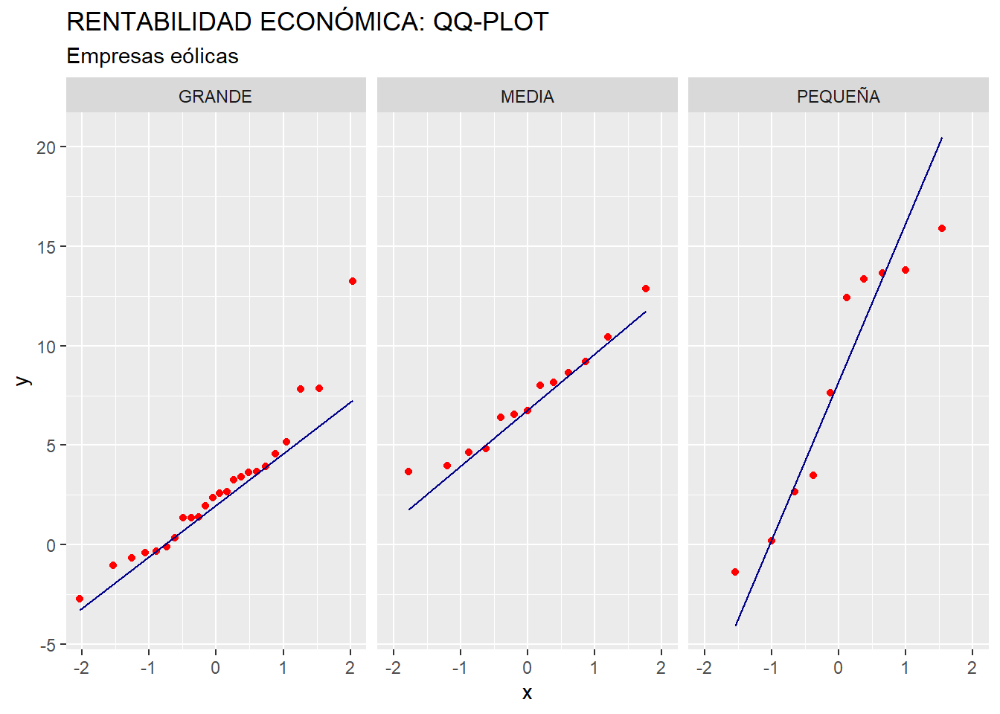

Capítulo 8 Análisis de la varianza.
8.1 Introducción.
El análisis de la varianza (ANOVA) puede considerarse una generalización del contraste de hipótesis de medias poblacionales iguales para el caso de poblaciones normales y con varianzas desconocidas, pero iguales. La generalización consiste en poder considerar más de dos poblaciones. La hipótesis nula será la que afirma que las medias poblacionales de la variable métrica en estudio, para todas las poblaciones, son iguales. La hipótesis alternativa, por su lado, afirmará que existe al menos dos poblaciones con medias diferentes. Como todo contraste, para llevarlo acabo hemos de tener una muestra representativa de cada población, y fijar un nivel de significación (usualmente 0.05).
También se puede considerar el ANOVA como un tipo especial de análisis de regresión, en la que la variable dependiente es una variable métrica, y las variables explicativas son atributos o factores (en escala nominal u ordinal). La misión de los factores es clasificar a los casos que constituyen nuestra muestra en distintas submuestras, cada una representativa de una de las subpoblaciones cuyas medias en la variable en estudio se quiere comparar.
8.2 ANOVA de un solo factor.
Aunque se pueden realizar ANOVAs con más de un atributo o factor, en este ejemplo nos ceñiremos al caso más simple, en el que solo hay un atributo o factor que se ocupa de distribuir los casos de la muestra entre los distintos grupos o submuestras (a partir de las categoría o nivel que toma cada caso).
En concreto, en esta práctica, comprobaremos si la dimensión del grupo empresarial al que pertenecen las empresas eólicas (medida en función del número de empresas integradas en el grupo empresarial, y concretada en el factor DIMENSION) tiene una influencia significativa sobre la rentabilidad económica (variable RENECO), en términos medios. Para ello se ha seleccionado una muestra constituida por 50 empresas productoras de electricidad mediante tecnología eólica. Así, la población, constituida por todas las empresas de generación eléctrica eólica de España, queda dividida en tres subpoblaciones: la subpoblación de empresas que pertenecen a grupos empresariales de DIMENSION (según el número de filiales contenidas) “GRANDE”, la subpoblación de empresas que pertenecen a grupos empresariales de DIMENSION “MEDIA”, y la subpoblación de empresas que pertenecen a grupos empresariales de DIMENSION “PEQUEÑA”. Cada una de estas subpoblaciones tendrán sus respectivas rentabilidades económicas medias, que desconocemos (ya que no tenemos los datos de la población, es decir, de todas las empresas eólicas del país; sino solo de una muestra de 50 empresas). Lo que si tenemos para cada subpoblación es una submuestra que la representa (parte de las 50 empresas de la muestra, que queda fraccionada en tres según el factor DIMENSION). Y de cada submuestra, tenemos la correspondiente rentabilidad media muestral. Lo que comprobaremos con el contraste de ANOVA, en definitiva, es si las diferencias observadas entre las rentabilidades medias de cada submuestra son lo suficientemente amplias como para pensar que, puede considerarse que existen diferencias importantes (significativas) entre las rentabilidades medias de las subpoblaciones (considerando todas las empresas eólicas que conforman la población).
Los datos están almacenados en el archivo de Microsoft Excel “eolica_50.xls”, y el script con el código del ejemplo se halla contenido en el fichero “anova_cluster.R”. Vamos a suponer que trabajaremos en un proyecto de RStudio al que denominaremos “anova”.
Una vez abierto el script en el editor de RStudio , comprobaremos que la primera parte del código está dedicada a la limpieza de la memoria (Environment) y a la importación de los datos. Para ello, activaremos el paquete {readxl} y utilizaremos la función read_excel(), indicando en los argumentos el archivo a explorar, y la hoja en la cual se encuentran los datos (hoja “Datos”). También hemos de prestar atención a la cuestión de si existen en la hoja de Excel anotaciones en las celdas donde no haya dato, para completar adecuadamente el argumento na= . Los datos se almacenarán en el data frame “datos”. En este data frame, la primera columna no es una verdadera variable, sino que se compone de los nombres de los casos o empresas. Con una línea de código adicional transformaremos esa primera columna en el nombre de las filas, de modo que tal columna abandona su rol de variable. En definitiva, el código para importar los datos es:
# Análisis ANOVA de un factor.
rm(list = ls())
# DATOS
library (readxl)
datos <- read_excel("eolica_50.xlsx", sheet = "Datos",
na = c("n.d.", "s.d."))
datos <- data.frame(datos, row.names = 1)
summary (datos)## RES ACTIVO FPIOS
## Min. :-5268.6 Min. : 25355 Min. : -10985
## 1st Qu.: 919.6 1st Qu.: 35512 1st Qu.: 1897
## Median : 2321.2 Median : 50301 Median : 17256
## Mean : 4986.7 Mean : 189142 Mean : 83164
## 3rd Qu.: 4380.4 3rd Qu.: 101035 3rd Qu.: 44871
## Max. :42737.0 Max. :2002458 Max. :1740487
## NA's :1
##
## RENECO RENFIN LIQUIDEZ
## Min. :-2.708 Min. :-263.639 Min. : 0.0140
## 1st Qu.: 1.817 1st Qu.: 1.251 1st Qu.: 0.6462
## Median : 3.957 Median : 14.322 Median : 1.1550
## Mean : 5.758 Mean : 32.071 Mean : 4.2370
## 3rd Qu.: 8.038 3rd Qu.: 36.193 3rd Qu.: 1.9185
## Max. :35.262 Max. : 588.190 Max. :128.4330
## NA's :2
##
## ENDEUDA MARGEN SOLVENCIA
## Min. : 0.917 Min. :-2248.16 Min. :-24.465
## 1st Qu.: 37.272 1st Qu.: 14.74 1st Qu.: 4.327
## Median : 74.683 Median : 23.86 Median : 25.317
## Mean : 66.646 Mean : -17.77 Mean : 33.353
## 3rd Qu.: 95.672 3rd Qu.: 45.88 3rd Qu.: 62.727
## Max. :124.465 Max. : 400.90 Max. : 99.082
##
## APALANCA MATRIZ DIMENSION
## Min. :-6905.772 Length:50 Length:50
## 1st Qu.: 7.586 Class :character Class :character
## Median : 126.208 Mode :character Mode :character
## Mean : 784.430
## 3rd Qu.: 763.952
## Max. :12244.351Antes de proceder al análisis de la varianza propiamente dicho, hemos de preparar nuestros datos mediante la localización de missing values y outliers. Los outliers, en el ANOVA, pueden tener una gran influencia (ya que se trabaja en términos medios) sobre los resultados, por lo que deben ser tratados convenientemente.
Para localizar los casos concretos de missing values, puede recurrirse a utilizar las herramientas de manejo de data frames del paquete {dplyr}. Previamente, realizaremos una copia del data frame original, “datos”, a la que llamaremos “muestra”, que es con la que trabajaremos (para mantener la integridad del primer data frame). Con la función vismiss() del paquete {visdat} podemos tener una visión gráfica general de los valores faltantes, en especial en el caso de la variable RENECO y el factor DIMENSION. Si hay casos faltantes en una de estas variables, los identificaremos filtrando el data frame con la función filter() de {dplyr}. Ante la existencia de missing values, se puede actuar de varios modos. Por ejemplo, se puede intentar obtener por otro canal de información el conjunto de valores de RENECO que no están disponibles, o recurrir a alguna estimación para los mismos y asignarlos. En caso de que esto sea difícil, se puede optar, simplemente, por eliminar estos casos, en especial cuando representan un porcentaje muy reducido respecto al total de casos. En nuestro ejemplo, vamos a suponer que hemos optado por esta última vía, al no conseguir unos valores más o menos verosímiles de RENECO para las empresas de las que se carece de dato. Así, estos casos, finalmente, será exluidos del análisis, utilizando para ello un nuevo filtro:
## RENECO DIMENSION
## Sargon Energias SLU NA MEDIA
## Viesgo Renovables SL. NA MEDIATras el código anterior, se han eliminado del data frame “muestra” las empresas “Sargon Energías S. L. U.” y “Viesgo Renovables S. L.”, empresas pertenecientes a grupos empresariales de dimensión media (DIMENSION), debido a que carecían de dato de rentabilidad económica (RENECO).
Una vez tratados los casos con valores perdidos o missing values, es necesario detectar la presencia de outliers o casos atípicos en la muestra, que pudieran desvirtuar los resultados derivados del ANOVA. Para ello, realizaremos un boxplot o gráfico de caja. Aplicaremos, por ejemplo, el código siguiente, que utiliza la gramática del paquete {ggplot2}:
# Outliers
library (ggplot2)
ggplot(data = muestra,
map = (aes(y = RENECO))) +
geom_boxplot(fill = "orange") +
ggtitle("RENTABILIDAD ECONÓMICA",
subtitle = "100 empresas eólicas") +
ylab("Rentabilidad Económica (%)")
En el gráfico de caja se aprecia claramente que existe un outlier. Para identificar tal empresa, calcularemos, respecto a la variable RENECO, el primer y tercer cuartiles, que nos servirán para construir el filtro que capturará el caso atípico. Así, en el código, las dos primeras filas calculan los cuartiles primero (Q1) y tercero (Q3) mediante la función quantile(). Luego se filtran, mediante la función filter() de {dplyr}, los outliers, calculadoscomo aquellos casos con valores de RENECO mayores que Q3 más 1,5 veces el rango intercuartílico de la variable; o menores que Q1 menos 1,5 veces dicho rango intercuartílico. Para calcular el rango intercuartílico se recurre a la función IQR(). Finalmente, con select() se muestran los casos en la consola de RStudio:
Q1 <- quantile (muestra$RENECO, c(0.25))
Q3 <- quantile (muestra$RENECO, c(0.75))
muestra %>%
filter(RENECO > Q3 + 1.5*IQR(RENECO) |
RENECO < Q1 - 1.5*IQR(RENECO)) %>%
select(RENECO)## RENECO
## Molinos Del Ebro SA 35.262La empresa identificada como outlier es “Molinos del Ebro S. A”. Como ocurría con los missing values, el tratamiento de los outliers depende de la información que se tenga, existiendo varias alternativas (corrección del dato, estimación, etc.) Si no se tiene información fiable, y los outliers no representan una gran proporción respecto al total de casos, puede optarse por su eliminación de la muestra, como haremos en este ejemplo. Podemos hacerlo creando un nuevo data frame a partir de “muestra”; pero sin ese caso. Ese nuevo data frame se llamará, por ejemplo, “muestra_so”:
Una vez preparados los datos, vamos a presentar los grupos de empresas eólicas y sus rentabilidades económicas medias. Para ello, diseñaremos una tabla con la función kable() del paquete {knitr}, y personalizada con algunas funciones incluidas en el paquete {kableExtra}. Para construir la tabla, hemos de crear anteriormente un pequeño data frame, llamado por ejemplo “tablamedias”, en el que cada caso o fila sea uno de los grupos en que queda dividida la muestra a partir de los niveles del factor “DIMENSION”, y que contenga tres variables: la DIMENSION de cada grupo o submuestra, su número de casos contenidos (variable “observaciones”), y las respectivas rentabilidades medias (variable “media”):
# Visualizando número de frecuencias y medias de los grupos con dplyr:
library (knitr)
library (kableExtra)
knitr.table.format = "html"
tablamedias <- muestra_so %>%
group_by(DIMENSION) %>%
summarise (observaciones = length(DIMENSION),
media = mean(RENECO))
tablamedias %>%
kable(format = knitr.table.format,
caption = "Rentabilidad Económica. Medias por grupos (tamaño matriz).",
col.names = c("Tamaño", "Observaciones", "Rentabilidad Económica")) %>%
kable_styling(full_width = F,
bootstrap_options = "striped", "bordered", "condensed",
position = "center",
font_size = 11) %>%
row_spec(0, bold= T, align = "c") %>%
row_spec(1:nrow(tablamedias), bold= F, align = "c")| Tamaño | Observaciones | Rentabilidad Económica |
|---|---|---|
| GRANDE | 24 | 2.721167 |
| MEDIA | 13 | 7.241154 |
| PEQUEÑA | 10 | 8.167200 |
Gráficamente, las tres submuestras de empresas pueden caracterizarse, en cuanto a la rentabilidad económica (RENECO), mediante dos tipos de gráficos: gráficos de densidad y gráficos de caja. Los gráficos serán construidos utilizando las facilidades del paquete {ggplot2}. Además, combinaremos los gráficos en una composición utilizando el paquete {patchwork}. El código es el siguiente:
# Graficando casos y medias.
# Crear el gráfico de densidad
gdensidad <- ggplot(data= muestra_so, aes(x = RENECO, color = DIMENSION, fill = DIMENSION)) +
geom_density(alpha = 0.3) +
geom_vline(data = tablamedias, aes(xintercept = media, color = DIMENSION), linetype = "dashed", size = 1) +
labs(title = "Diagramas de Densidad por Grupo con Medias",
x = "Rentabilidad Económica (%)",
y = "Densidad") +
theme_grey()
# Crear box-plot
gbox <- ggplot(data = muestra_so,
map = (aes(y = DIMENSION,
x = RENECO,
color = DIMENSION,
fill = DIMENSION))) +
geom_boxplot(outlier.shape = NA,
alpha = 0.3) +
stat_summary(fun = "mean",
geom = "point",
size = 3,
map = aes(col = DIMENSION),
alpha = 0.60) +
geom_jitter(width = 0.1,
size = 1,
map = (aes(col = DIMENSION)),
alpha = 0.40) +
labs(tittle ="Diagramas de caja por Grupo con Medias",
xlab = "Rentabilidad Económica (%)",
ylab = "Submuestras")
# Combinar gráficos.
library(patchwork)
gdensidad / gboxCada grupo o submuestra “representa” a una subpoblación, según la dimensión que tenga la matriz empresarial. El ANOVA lo que intenta determinar es si, observadas las diferencias en las medias muestrales de la variable en estudio (aquí, RENECO), esas diferencias pueden considerarse o no estadísticamente significativas a nivel poblacional. En realidad, la hipótesis nula a contrastar es que ninguna de las diferencias entre las medias de la variable de las subpoblacionales es estadísticamente significativa; mientras que la hipótesis alternativa es que existe al menos una diferencia significativa entre las medias de las subpoblaciones. En definitiva, la hipótesis nula a contrastar sugiere que no existen diferencias entre las rentabilidades económicas medias de los grupos (subpoblaciones) de empresas eólicas (discriminadas por el tamaño del grupo empresarial al que pertenecen). De ser así, el factor DIMENSION no tendría una influencia estadísticamente significativa sobre el valor medio de la variable RENECO.
Las conclusiones a las que lleguemos con el contraste F de ANOVA serán válidas en la medida en que se cumplan las hipótesis de normalidad y homogeneidad en las varianzas de la variable dependiente o métrica (RENECO), en los tres grupos o subpoblaciones en que queda dividida la población atendiendo los niveles o categorías del factor (DIMENSION). Hemos de contrastar, pues, ambas hipótesis, a partir de la información de las tres submuestras que tenemos y que representan, respectivamente, a cada una de esas subpoblaciones.
En cuanto a la hipótesis de normalidad, se pueden usar dos vías para verificar su cumplimiento: el análisis gráfico y la realización de contrastes estadísticos.
El análisis gráfico puede llevarse a cabo mediante la realización de gráficos QQ de la variable RENECO, a partir de las submuestras o grupos de empresas en que queda fragmentada la muestra a partir de la variable DIMENSION. Estos gráficos pueden generarse con la gramática del paquete {ggplot2}:
# PRERREQUISITOS / HIPÓTESIS ANOVA
# Normalidad / Gráfico QQ
ggplot(data = muestra_so,
aes(sample = RENECO)) +
stat_qq(colour = "red") +
stat_qq_line(colour = "dark blue") +
ggtitle("RENTABILIDAD ECONÓMICA: QQ-PLOT",
subtitle = "Empresas eólicas") +
facet_grid(. ~ DIMENSION)
Los gráficos QQ parecen inidicar que la variable RENECO tiene un comportamiento distante a la Ley Normal en las submuestras (y, por tanto, en las correspondientes subpoblaciones), al localizarse, algunos de los puntos, relativamente alejados de la diagonal, especialmente en el caso de las empresas pertenecientes a matrices de dimensión “grande”. Para extraer una conclusión de un modo más preciso, vamos a realizar el contraste de normalidad de Shapiro-Wilk:
# Normalidad: Shapiro-Wilk para cada grupo
normalidad <- muestra_so %>%
group_by(DIMENSION) %>%
summarise(shapiro_p_value = round(shapiro.test(RENECO)$p.value, 3)) %>%
mutate(decide = if_else(shapiro_p_value > 0.05,
"NORMALIDAD",
"NO-NORMALIDAD"))
tablashapiro <- normalidad %>%
kable(format = knitr.table.format,
caption = "Normalidad (Shapiro-Wilks)",
col.names = c("Dimensión", "p-valor", "Conclusión")) %>%
kable_styling(full_width = F,
bootstrap_options = "striped", "bordered", "condensed",
position = "center",
font_size = 11) %>%
row_spec(0, bold= T, align = "c") %>%
row_spec(1:nrow(normalidad), bold= F, align = "c")
tablashapiroEn el código anterior, se crea un pequeño data frame denominado “normalidad”, que incluye, para cada submuestra definida por los niveles del factor DIMENSION, la variable “decide” con los p-valores de la prueba de Shapiro-Wilk, y un atributo llamado “decide”, creado mediante la función mutate() de {dplyr}, que adopta la categoría “NORMALIDAD” o “NO-NORMALIDAD” dependiendo de los p-valores. Posteriormente, el data frame “normalidad” se presenta como una tabla de nombre “tablashapiro”.
| Dimensión | p-valor | Conclusión |
|---|---|---|
| GRANDE | 0.038 | NO-NORMALIDAD |
| MEDIA | 0.698 | NORMALIDAD |
| PEQUEÑA | 0.134 | NORMALIDAD |
En esta prueba, la hipótesis nula equivale al supuesto de normalidad. Para un 5% de significación estadística, un p-valor superior a 0,05 implicará el no-rechazo de la hipótesis nula de normalidad. En el ejemplo, la submuestra de empresas pertenecientes a matrices de dimensión “grande” llevan a pensar que esta subpoblación no sigue una distribución normal. En los otros dos casos, en cambio, podemos aceptar la existencia de normalidad.
En cuanto a la homogeneidad de las varianzas, contrastamos este supuesto mediante la prueba de Bartlett.
##
## Bartlett test of homogeneity of variances
##
## data: muestra_so$RENECO by muestra_so$DIMENSION
## Bartlett's K-squared = 9.389, df = 2, p-value = 0.009146El p-valor es menor que 0,05; luego se rechaza la hipótesis nula de homogeneidad de las varianzas de los grupos (subpoblaciones).
Puesto que en uno de los grupos (subpoblaciones) se rechaza la hipótesis de normalidad, y (sobre todo) puesto que no se puede considerar una dispersión similar en las tres subpoblaciones (varianzas homogéneas), los resultados de la prueba F de ANOVA pierden validez, y habría que optar por una alternativa robusta. No obstante, a modo ilustrativo, seguiremos adelante con la prueba F de ANOVA.
El contraste F de ANOVA de igualdad en las medias de la variable en estudio (rentabilidad económica, RENECO) de las distintas (sub)poblaciones (grupos de empresas según el tamaño del grupo empresarial de pertenencia) se realiza en R mediante la función aov(), que guardaremos, por ejemplo, como el objeto “Datos.aov”, y que se almacenará en forma resumida en la lista “summary_aov”, de un solo elemento. Este elemento, que contiene la solución resumida del contraste ANOVA, se convierte en un data frame (de nombre “aov_table”) con el objetivo de presentarlo como una tabla de kable():
# Test F de ANOVA
Datos.aov <- aov(muestra_so$RENECO ~ muestra_so$DIMENSION)
summary_aov <- summary(Datos.aov)
# Extraer los resultados del ANOVA
aov_table <- as.data.frame(summary_aov[[1]])
# Convertir la tabla en una tabla de kable
aov_table %>%
kable(format = knitr.table.format,
caption = "Resultados del ANOVA",
col.names = c("Grados Libertad",
"Suma cuadrados",
"Media suma cuadrados",
"Estadístico F",
"p-valor")) %>%
kable_styling(full_width = F,
bootstrap_options = "striped", "bordered", "condensed",
position = "center",
font_size = 11) %>%
row_spec(0, bold= T, align = "c") %>%
row_spec(1:nrow(aov_table), bold= F, align = "c")| Grados Libertad | Suma cuadrados | Media suma cuadrados | Estadístico F | p-valor | |
|---|---|---|---|---|---|
| muestra_so$DIMENSION | 2 | 289.4459 | 144.72296 | 8.720764 | 0.0006453 |
| Residuals | 44 | 730.1895 | 16.59522 | NA | NA |
El valor del estadístico F de ANOVA es de 8,721; con un p-valor asociado de 0,0006. Como el p-valor es menor que 0,05, se rechaza la hipótesis nula de medias iguales; por lo que podremos afirmar (para una significación del 5%) que el tamaño o dimensión del grupo empresarial de pertenencia influye, en media, en la rentabilidad económica obtenida.
8.3 Comparaciones múltiples.
Cuando el resultado del contraste F de ANOVA es de rechazo de la hipótesis nula, se presenta otra cuestión interesante. La hipótesis alternativa dice que existe al menos una diferencia entre las medias de dos grupos que es “importante”. Pero no tienen porque ser todas. Entonces, cabe preguntarse que diferencias concretas entre medias son estadísticamente significativas, y cuáles no. Para dilucidar esta cuestión se han desarrollado diversas pruebas de comparaciones múltiples. Una de ellas es la prueba HSD de Tuckey. Un modo de obtener los resultados de esta prueba es ejecutarla a partir de las funciones del paquete {emmeans}. En concreto, los resultados de la prueba HSD de Tuckey se obtendrán aplicando la función pairs() a un objeto creado previamente con la función emmeans(), al que hemos llamado, por ejemplo, “medias”, y que tiene como argumentos el nombre de nuestra solución del contraste ANOVA anterior y, entrecomillado, el nombre de la variable que actúa como factor que divide a la muestra en los tres grupos (submuestras) comparados (DIMENSION). Los resultados se han guardado en el objeto “pares”, que posteriormente se ha transformado en un data frame para poder ser presentado como una tabla de kable():
# COMPARACIONES MÚLTIPLES
library(emmeans)
medias <- emmeans(Datos.aov, "DIMENSION")
pares <- pairs(medias)
pares_df <- as.data.frame(pares)
pares_df %>%
kable(format = knitr.table.format,
caption = "Resultados comparaciones múltiples",
col.names = c("Grupos",
"Diferencia estimada",
"Desviación Típica",
"Grados de libertad",
"Estadístico t",
"p-valor")) %>%
kable_styling(full_width = F,
bootstrap_options = "striped", "bordered", "condensed",
position = "center",
font_size = 11) %>%
row_spec(0, bold= T, align = "c") %>%
row_spec(1:nrow(pares_df), bold= F, align = "c")| Grupos | Diferencia estimada | Desviación Típica | Grados de libertad | Estadístico t | p-valor |
|---|---|---|---|---|---|
| GRANDE - MEDIA | -4.5199872 | 1.402862 | 44 | -3.2219752 | 0.0066466 |
| GRANDE - PEQUEÑA | -5.4460333 | 1.533294 | 44 | -3.5518532 | 0.0026160 |
| MEDIA - PEQUEÑA | -0.9260462 | 1.713498 | 44 | -0.5404418 | 0.8518522 |
En la tabla generada, cada fila recoge la diferencia entre la rentabilidad media de las empresas incluidas en las submuestras de los distintos niveles de dimensión de los grupos empresariales a los que perteneces dichas empresas. En la última columna, se muestran los p-valores. La hipótesis nula implica que la diferencia entre las rentabilidades medias de los dos grupos implicados son tan pequeñas que pueden considerarse nulas. Por tanto, p-valores muy pequeños (menores que 0,05) implican un rechazo de esta hipótesis, y la admisión de que esas difrencias son significativamente distintas a 0, o sea, “importantes”. Por tanto, en el ejemplo se concluye que las rentabilidad media del grupo de empresas de matrices de dimensión “grande” difiere significativamente con respecto a las rentabilidades medias de los otros dos grupos. En cambio, las rentabilidades medias de los grupos de empresas de matrices de dimensión “media” y “pequeña” no difieren significativamente.
8.4 ¿Y si no se cumplen las condiciones para realizar el contraste F de ANOVA?
En el ejemplo anterior hemos visto cómo, aunque hemos seguido el procedimiento de realización del contraste F de ANOVA y la prueba HSD de Tuckey de comparaciones múltiples; no sé cumplían algunos de los requisitos necesarios para confiar en los resultados de estos contrastes: la normalidad de las subpoblaciones (medida a través de las submuestras) y la homogeneidad de las varianzas de estas.
Cuando esto ocurre, es necesario recurrir a técnicas robustas, puesto que el comportamiento de la variable analizada en las subpoblaciones (grupos) no se ajusta al necesario para poder aplicar los contrastes anteriores.
Una prueba robusta que puede suplir al contraste F de ANOVA es la de Kruskal-Wallis. En esta prueba, la hipótesis nula vuelve a ser que no existen diferencias significativas entre las medias de la variable estudiada de las diferentes subpoblaciones (representadas por las correspondientes submuestras), mientras que la hipótesis alternativa apuesta porquela existencia al menos una diferencia significativa. Para aplicar la prueba de Kruskal-Wallis en R, puede recurrirse a la función kruskal.test() del paquete {pgirmess}. Así, en nuestro ejemplo, tenemos:
#Cuando se incumplen las hipotesis de ANOVA (test robusto)
library(pgirmess)
Datos.K <- kruskal.test(muestra_so$RENECO ~ muestra_so$DIMENSION)
Datos.K##
## Kruskal-Wallis rank sum test
##
## data: muestra_so$RENECO by muestra_so$DIMENSION
## Kruskal-Wallis chi-squared = 14.718, df = 2, p-value = 0.0006368Puede comprobarse cómo el p-valor es muy pequeño (menor a 0,05), por lo que hemos de rechazar la hipótesis nula de medias iguales y admitir que existe al menos dos grupos (subpoblaciones) en los que la diferencia entre la rentabilidad económica media es significativa.
De nuevo, si se rechaza la hipótesis nula, cabe preguntarse cuáles son los grupos o subpoblaciones concretas cuyas medias de rentabilidad económica son significativamente diferentes. Kruskal-Wallis desarrollaron también la versión robusta de la prueba HSD de Tuckey, que se incluye en {pgirmess}, con la función kruskalmc(). En el siguiente código se aplica la función, cuya solución se guarda en el objeto “Datos.kmc”. El elemento de la solución “dif.com”, que contiene las comparaciones entre las medias, se pasa a un data frame para poder ser mostrado como una tabla de kable():
# Comparaciones múltiples
Datos.kmc <- kruskalmc(muestra_so$RENECO ~ muestra_so$DIMENSION)
# Convertir los resultados a un data frame
Datos.kmc.df <- as.data.frame(Datos.kmc$dif.com)
Datos.kmc.df %>%
kable(format = knitr.table.format,
caption = "Kruskal-Wallis. Múltiples diferencias",
col.names = c("Diferencias medias",
"Diferencias críticas",
"Significación")) %>%
kable_styling(full_width = F,
bootstrap_options = c("striped",
"bordered",
"condensed"),
position = "center",
font_size = 11) %>%
row_spec(0, bold = T, align = "c") %>%
row_spec(1:nrow(Datos.kmc.df), bold = F, align = "c")| Diferencias medias | Diferencias críticas | Significación | |
|---|---|---|---|
| GRANDE-MEDIA | 16.381410 | 11.30376 | TRUE |
| GRANDE-PEQUEÑA | 13.758333 | 12.35473 | TRUE |
| MEDIA-PEQUEÑA | 2.623077 | 13.80676 | FALSE |
En la tabla generada se comprueba cómo las diferencias que la media de la rentabilidad económica de la subpoblación de empresas pertenecientes a matrices de dimensión “grande” son significativas (para un 0,05 de significación). En cambio, las rentabilidades económicas medias de las empresas pertenecientes a matrices de dimensiones “media” y “pequeña” no difieren entre sí de modo significativo.
8.5 Materiales para realizar las prácticas del capítulo.
En esta sección se muestran los links de acceso a los diferentes materiales (scripts, datos…) necesarios para llevar a cabo los contenidos prácticos del capítulo.
Datos (en formato Microsoft (R) Excel (R)):
- eolica_50.xlsx (obtener aquí)
Scripts:
- anova_eolica.R (obtener aquí)